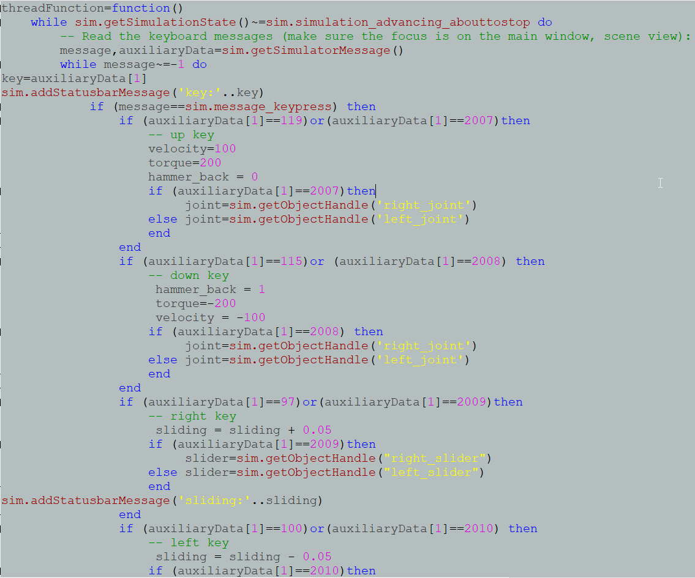
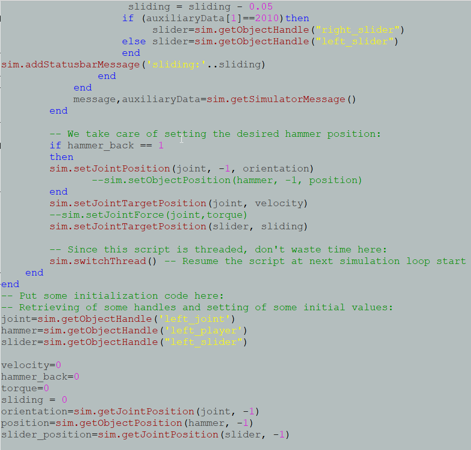
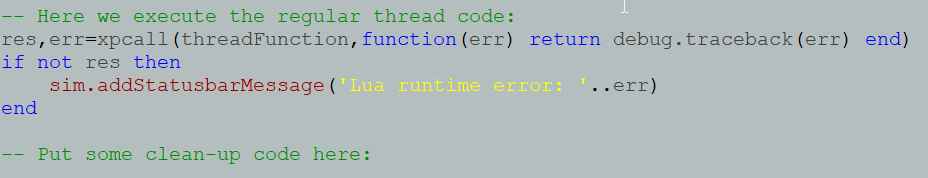
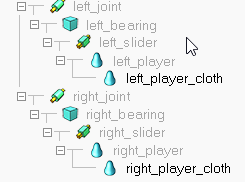

影片連結: https://www.youtube.com/watch?v=hiw8xg1cV4M&t=11s
process explanation
下列的圖面解說如下

以上圖的 if then else end 來說，根據 lua language ，先用 if 給予假設我要的條件，接著寫上 then 後並執行我要的動作，再來是 else 是用完上面 if then 才接著告訴它我的假設並不是如上面的 if then 的話，所以是用來額外假設我上個假設是錯的，並執行其他的動作，寫完 else 後在給予 end ，是為了將一個迴圈封閉，有了開始也必須要結束的概念。

由上圖所示有紅字的部分是對括號中的項目進行指定，像是sim.setJointTargetPosition(joint, velocity)，是指模擬並設定旋轉軸的目標位置為(旋轉軸 , 速度)這樣作為解釋。
上圖還有類似黃色的字樣是指，我針對地物件是圖面上的什麼東西，像是joint=sim.getObjectHandle('left_joint')，是指 joint = 模擬並得到項目的處理('left_joint')這麼解釋的。
上圖還有給予參數，像是速度 = 0、人偶回程 = 0、扭矩 = 0，還有滑動過程 = 0。

上圖的這條程式碼是要關閉整個 lua system 的程式，這樣才能流通為一個正常的一串程式碼，那這樣的寫法是要讓他一直跑一整條所寫下的程式。

上圖所示為桿件的連接方式，以V-rep來說，每一個物件想要讓它旋轉或是平移都需要在途中給予物件連接性，以上突來講，我想讓物件既可旋轉也可以平移，所以我在 joint 跟 slider 之間放置一個物品，最主要是以裡面的物件程式，它會判定要求要有物件連結才能進行物理運動，相同的我也必須要套用人偶，所以我在 slider 跟 player 之間又放入一個實體物件，進行串聯，這樣才不會因為 player 為 skin 的關係而造成錯誤。